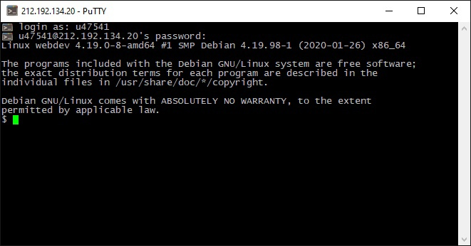

Подключение к учебному серверу
С помощью клиента Putty подключились к серверу 212.192.134.20 (kubsu-dev.ru) по SSH с помощью логина и пароля.

Ping
С помощью команды ping на учебном сервере узнали IP-адрес веб-сервера kubsu.ru. PING - основная утилита командной строки Windows для проверки сетевых соединений в TCP/IP. Команда PING с помощью отправки сообщений с эхо-запросом по протоколу ICMP проверяет соединение на уровне протокола IP с другим компьютером, поддерживающим TCP/IP. После каждой передачи выводится соответствующее сообщение с эхо-ответом.
Nslookup
С помощью команды nslookup узнали A-записи и MX-записи домена kubsu.ru и kubsu-dev.ru. nslookup — утилита, предоставляющая пользователю интерфейс командной строки для обращения к системе DNS. Позволяет задавать различные типы запросов и опрашивать произвольно указываемые сервера.
A = адресная запись
MX = почтовый шлюз + приоритет
Whois
WHOIS — сетевой протокол прикладного уровня, базирующийся на протоколе TCP. Основное применение — получение регистрационных данных о владельцах доменных имён, IP-адресов и автономных систем.
git clone
Сделали веб-страницу index.html со скриншотами, добавили ее в git, с помощью SSH склонировали репозитарий со скриншотами и страницей в каталог /var/www/html/u47541/
FileZilla
С помощью программы FileZilla соединились с учебным сервером с логином и паролем по протоколу FTP и скопировали на локальный компьютер файлы задания из каталога /var/www/html/u47541/